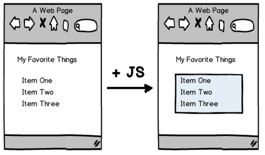
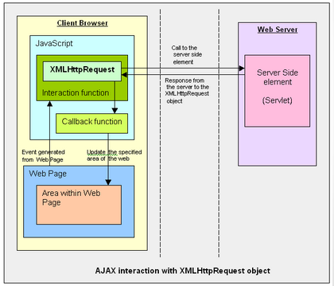
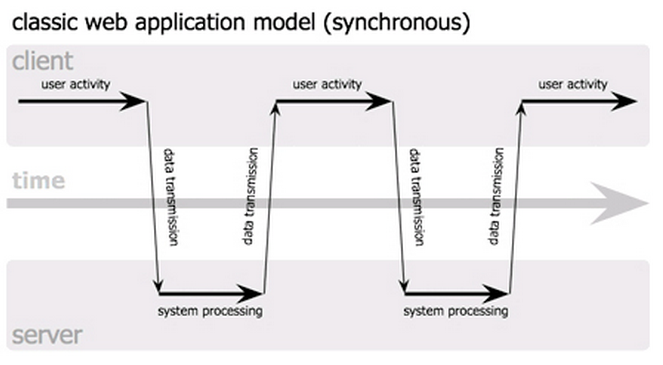
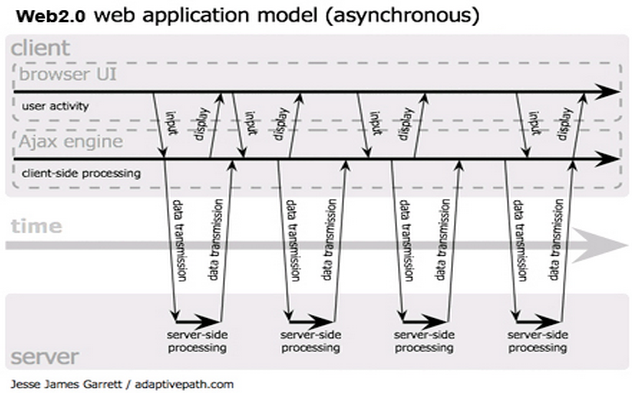
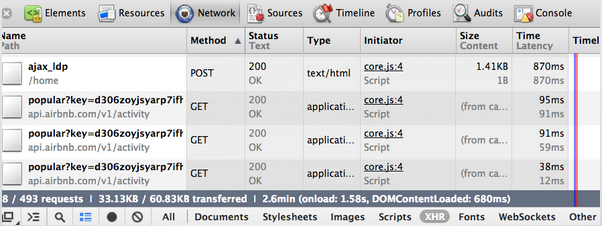
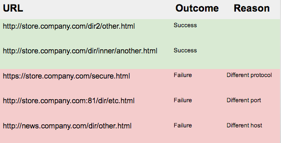

Асинхронные технологии: AJAX/JSON
Заметка:
Мы не используем API на этом занятии, мы только рассматриваем концепт AJAX.
Обзор: HTML + JS, вместе!
Классический управляемые данными веб-приложение, написана так, что: отображает веб-страницы ожидает действий пользователя запрашивает данные с сервера перезагружает страницу Это приводит к тому, что пользователь может ощутить "время простоя" - это период времени, когда пользователь не может взаимодействовать с веб-страницей.
Статичный контент + Прогрессивное улучшение(Progressive Enhancement)

Пример
The classic data-driven web app is written so that it: displays a webpage waits for user interaction queries the server for data reloads the webpage This has the effect that the user has "down time" - there is a period of time where they can't interact with the webpage at all.
Динамический контент

The classic data-driven web app is written so that it: displays a webpage waits for user interaction queries the server for data reloads the webpage This has the effect that the user has "down time" - there is a period of time where they can't interact with the webpage at all.
Сохранение данных в JSON
- Пары ключ/значение(key/value)
- Ключ должен быть в двойных кавычках (в отличии от JS объектов)
- Значение может быть следующих типов данных: Number, String, Boolean, Array, Object,
null - Напоминает объекты/хеши, таблицы/структы из других языков программировния
- Валидация @ JSONLint.com
{
"firstName": "Jane",
"lastName": "Smith",
"address": {
"streetAddress": "425 2nd Street",
},
"phoneNumbers": [
"212 732-1234" ]
}
Используем JS для преобразования JSON в DOM
var myProfileJSON = '{"firstName": "Liz", "lastName": "Howard", "cats": ["Tribbles", "Jean Claws"]}';
var myProfile = JSON.parse(myProfileJSON);
var p = document.createElement('p');
p.innerHTML = 'My name is ' + myProfile.firstName + ' ' + myProfile.lastName + '. ';
p.innerHTML += 'My cats are ' + myProfile.cats.join(', ') + '.';
var p = $('<p>');
p.html('My name is ' + myProfile.firstName + ' ' + myProfile.lastName + '. ');
p.append('My cats are ' + myProfile.cats.join(', ') + '.');
практика
Объединитесь с человеком, который сидит рядом для совместной работы.
AJAX
Асинхронный JavaScript и "XML"

Allows for asynchronous data transfer between a webpage & web server. Javascript tells the browser to retrieve a particular URL and send the data back to the webpage.
AJAX в реальныз условиях
Allows for asynchronous data transfer between a webpage & web server. Javascript tells the browser to retrieve a particular URL and send the data back to the webpage.
Web 1.0 и действия пользователя

The classic data-driven web app is written so that it: displays a webpage waits for user interaction queries the server for data reloads the webpage This has the effect that the user has "down time" - there is a period of time where they can't interact with the webpage at all.
Web 2.0 и действия пользователя

The new data-driven web app is written so that it: displays a webpage waits for user interaction queries the server for data reloads part of the webpage The user can still interact with other parts of the page while one part is loading and they can selectively load the content they're interested in. This may seem like a subtle difference, but it's arguably the most important part of Web2.0 programming.
Web 1.0 в сравнении с Web 2.0
| Использованные технологии: | Использованные технологии: |
|
|
Запрос и ответ

- Front-End: Эй, Back! Вот мой паспорт. Могу ли получить некоторые данные? Как на счет книг через AJAX?
- Back-End дай подумать, как обработать твой запрос...
- Back-End посмотрю в базе данных, поиск...
- Back-End: 200 OK, вот некоторые книги через AJAX!
- Front-End: Спасибо! Я планирую сделать онлайн книжную полку с этимим данными!
Анатомия XMLHttpRequest
// инициализация запроса
var request = new XMLHttpRequest();
// добавить слушателя события
request.addEventListener('load', function () {
// преобразование строки в объект
console.log(JSON.parse(request.responseText));
});
request.open('get', '/path/to/api', true);
request.setRequestHeader('Content-type', 'application/json');
request.send();
XMLHttpRequest: Идем дальше
- Старые IE реализовывал XMLHR не так как другие браузеры, поэтому возможно там следует использовать ActiveXObject если XMLHttpRequest не доступен.
- Различные CRUD операции могут быть использованы
- Иногда понадобиться отправлять дополнительные данные серверу
- Ошибки и ответы нужно обрабатывать
Метод fetch - замена XMLHttpRequest
fetch('/article/fetch/user.json')
.then(function(response) {
alert(response.headers.get('Content-Type')); // application/json; charset=utf-8
alert(response.status); // 200
return response.json();
})
.then(function(user) {
alert(user.name);
})
.catch( alert );
Информция о fetch
Отладка AJAX запросов
- Выбираем табы NET/Network в панели разработчика (Dev Tools) Chrome или Firebug, выбирите "XHR" фильтр чтобы увидеть все созданные XMLHttpRequests.
- Посмотрите что в запросе и ответе нажав на один из списка.

Кросдоменная политика (Cross Domain Policy)
For http://store.company.com/dir/page.html:
